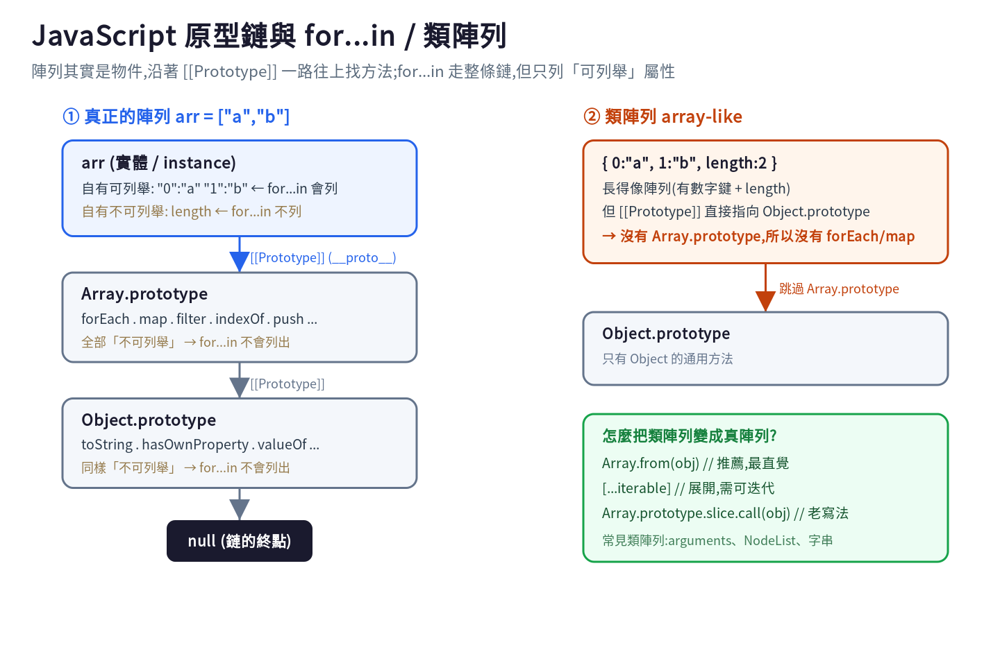
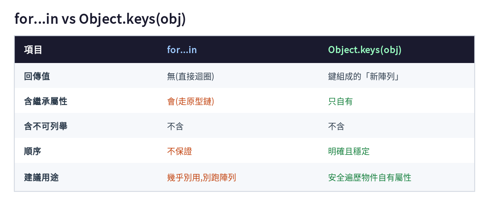

JavaScript 初學者最容易踩的雷之一,就是用for...in去跑陣列。這篇用一張原型鏈圖,講清楚for...in到底走了什麼、為什麼會出包,以及什麼時候該改用Object.keys()。
Array.prototype.shuffle = function () { /* 某個你引入的套件加的 */ };
const scores = [90, 85, 70];
for (const i in scores) {
console.log(i);
}
// 預期:0 1 2
// 實際:0 1 2 shuffle ← 多了一個!只要有任何函式庫往 Array.prototype 加東西,你的 for...in 就會多跑出來。要理解為什麼,得先看 JavaScript 的原型鏈(prototype chain)。

陣列其實是物件。當你存取 arr.forEach 時,JS 在 arr 自己身上找不到,就沿著 [[Prototype]] 往上找:
arr → Array.prototype(forEach、map…) → Object.prototype(toString…) → null
for...in 的設計就是「走完整條原型鏈,列出所有可列舉(enumerable)的鍵」。
關鍵在 enumerable(可列舉) 這個屬性旗標:內建方法(forEach、toString…)被設成不可列舉,所以 for...in 看不到它們;但你(或套件)用 Array.prototype.xxx = ... 加的屬性預設是可列舉的,於是就被一起列出來了。
你可以在瀏覽器 F12 的 Console 自己驗證:
Object.getOwnPropertyDescriptor(Array.prototype, "forEach").enumerable; // false
Object.keys([10, 20]); // ["0", "1"] 只列可列舉自有屬性
Object.getOwnPropertyNames([10, 20]); // ["0", "1", "length"] 連不可列舉也列ECMAScript 規格不保證 for...in 的遍歷順序。現代引擎實務上會把整數鍵照數字升冪走,但這不是規格承諾,你不該依賴它。對需要嚴格 0→1→2 順序的陣列來說,這是另一個不該用 for...in 的理由。
跑陣列用 for...of、forEach,或傳統 for:
const scores = [90, 85, 70];
for (const s of scores) { /* 走「值」,保證順序 */ }
scores.forEach((s, i) => { /* 走「值 + 索引」 */ });跑物件用 Object.keys()(或 values / entries):
const user = { name: "Abby", age: 30 };
for (const key of Object.keys(user)) {
console.log(key, user[key]);
}Object.keys() 和 for...in 最大的不同:它只回傳物件「自己的」可列舉屬性,不會往原型鏈上爬,所以不會有「多跑出繼承屬性」的問題;而且它回傳一個真正的陣列,順序規則明確又穩定。

for...in 走的是「整條原型鏈上的可列舉鍵」,容易把繼承來的屬性也跑進去、順序又不保證;陣列用 for...of / forEach,物件用 Object.keys(),就能避開絕大多數雷。
延伸:arguments、NodeList 這類「類陣列(array-like)」沒有 Array.prototype,所以沒有 map,要先用 Array.from() 轉成真陣列——這也是同一條原型鏈觀念的延伸。